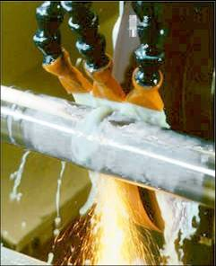
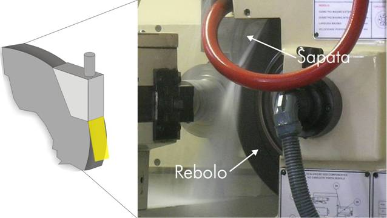
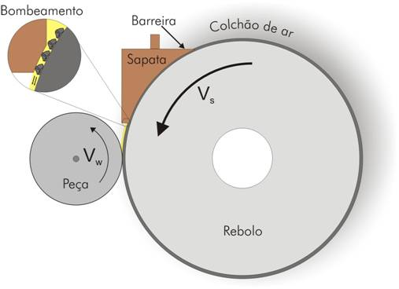
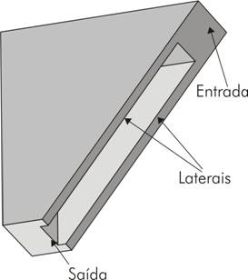
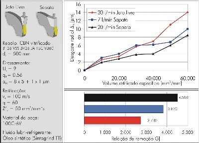

LMP>Linhas
de Pesquisa>GENDEF>Otimização
da Adução de Fluido na Retificação com CBN
|
O emprego de altas velocidades de corte no processo de retificação e a utilização de rebolos CBN são tendências cada vez mais evidentes dentro do universo da usinagem. A retificação caracteriza-se pela geração de grande quantidade de calor em função do atrito e deformações plásticas, onde a temperatura na região de contato entre o rebolo e a peça aumenta com a velocidade de corte. O calor desenvolvido no processo é conduzido para a peça, para o grão abrasivo, para o ligante e para o meio, podendo acarretar danos metalúrgicos à peça e ser responsável por um desgaste prematuro do rebolo. Dentro desse contexto, o fluido lubi-refrigerante apresenta-se como um recurso indispensável para os processos abrasivos. OBJETIVOSDesenvolver um sistema de aplicação de fluido lubri-refrigerante do tipo sapata, permitindo a sua comparação com sistemas atualmente empregados na indústria.


Sistema otimizado na aplicação do fluido na retificação METODOLOGIAForam realizados ensaios de retificação cilíndrica
externa de mergulho em uma retificadora cilíndrica externa e interna
comandada numericamente, fabricada pela empresa ZEMA Zselics Ltda., modelo
Pratika Flexa-600L. O material ensaiado foi um ferro fundido nodular perlítico,
com designação GGG70, de acordo com a norma DIN 1693. Foram
utilizados dois tipos de rebolos de CBN sendo um com ligante resinóide
e outro com ligante vitrificado. A ferramenta utilizada para perfilar o
rebolo com ligante resinóide foi um rolo diamantado. 
Esquema da tubeira tipo sapata confeccionada

Detalhe da sapata
RESULTADOSCom o emprego da sapata e uma vazão de 20 L/min de fluido a relação de remoção G foi de aproximadamente 4 500, enquanto com a tubeira de jato livre e uma vazão de 30 L/min, foi de aproximadamente 2 700. Além das melhorias obtidas no desgaste radial do rebolo, são melhores os resultados de qualidade da superfície retificada, expressos através da redução da profundidade de rugosidade Rz com o emprego da sapata. 
Desgaste radial do rebolo com tubeira de jato livre e sapata (clique para ampliar). As principais vantagens desse processo são:
|
| Contato:
GENDEF Walter Lindolfo Weingaertner Prof. Dr.-Ing |
Última Atualização 23.06.2006 |
{kind=link}